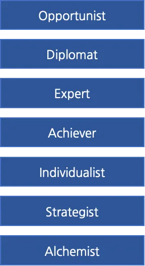

Should CTOs - or VPs, Directors, Engineering Managers, or any other technical manager role - write code?
It’s a polarizing question. The answer often depends on your background, definition of what a CTO should do, and the size of your organization.
It’s a question I’ve struggled with for many years. I’ve regularly asked myself what, if any, code should I be writing? How can I add value without undermining the engineers on my team? And when I write code, why do I always feel guilty?
Why Write Code as CTO?
As CTO, I’ve found several advantages of remaining an individual contributor. First, it draws on my experience. I started my career as a software engineer and I often see patterns that earlier-in-career engineers have yet to experience.
Writing code also keeps me close to the technology. This has proved to be a good BS detector for when engineers are taking a direction that just doesn’t feel right.
Finally, I’ve found writing code is useful to explore emerging trends. I typically learn by doing vs. reading. A couple of hours with a new stack can be valuable to understand the possibilities of a new technology.
Cons of writing code as CTO
Now, of course, writing code as CTO is a double-edged sword.
On one hand, my code may not be of the highest quality (even though secretly I refuse to believe it!) This can introduce a challenging power dynamic when I submit a pull request and other engineers need to provide critical feedback.
In addition, if my code is on the critical path, it has the potential to cause production issues. The team shouldn’t get paged in the middle of the night to resolve a bug that the CTO inadvertently checked in.
Finally, it doesn’t scale. Locking myself in my office writing code takes me away from other tasks that help the organization more forward. In a former role as VP of Engineering, I was in the middle of a “personal project,” debugging a prototype, when one of my engineers came to me and said, “It’s great that you are working on that, but I really need you to do some ‘vp-ing’ right now.”
So, should CTOs write code? I was recently discussing this question with my coach, Jim Svagerko. He introduced me to a framework that introduces seven developmental action logics. I found this framework offered a new and interesting lens through which to answer the question.
Seven Kinds of Action Logic
In April 2005, David Rooke and William R. Torbert published an article in Harvard Business Review called Seven Transformations of Leadership [link]. This article summarized the results of a multi-year survey sent to thousands of leaders across hundreds of organizations. The goal of the survey was to search for data that complete the sentence, “A good leader…”
The results enabled the researchers to create seven layers of action logics: Opportunist, Diplomat, Expert, Achiever, Individualist, Strategist, and Alchemist. Action logics are how leaders interpret their surroundings and react when their power or safety is challenged.

Here’s a quick rundown of each:
Opportunist: Wins in any way possible. Self-oriented, manipulative, “might makes right.” Good in emergencies and sales opportunities. In the survey, 5% of leaders profiled as this action logic
Diplomat: Avoids overt conflict. Wants to belong; obeys group norms; rarely rocks the boat. Good as supportive glue within an office; helps bring people together. 12% profiled as this action logic.
Expert: Rules through logic and expertise. Seeks rational efficiency. Good as individual contributor. 38% profiled as this action logic.
Achiever: Meets strategic goals. Effectively achieves goals through teams; juggles managerial duties and market demands. Well suited to managerial roles; action and goal oriented. 30% profiled as this action logic.
Individualist: Interweaves competing personal and company action logics. Creates unique structures to resolve gaps between strategy and performance. Effective in venture and consulting roles. 10% profiled as this action logic.
Strategist: Generates organizational and personal transformations. Exercises the power of mutual inquiry, vigilance, and vulnerability for both the short and long term. Effective as a transformational leader. 4% profiled as this action logic.
Alchemist: Generates social transformations. Integrates material, spiritual, and societal transformation. Good at leading society-wide transformations. 1% profiled as this action logic.
Reading through these, there are probably leaders you’ve worked with (or you report to) who you can place in one of these profiles. You may even guess where you fit.
When I first read through this, I immediately gravitated towards Achiever. Like many CTOs, much of my responsibility is ensuring my engineers and teams are successful based on their needs and the outcomes of the organization.
As I studied the framework, however, I asked myself, “Which action logic do I gravitate to when I write code?”
This is where it gets interesting. Looking through the list of action logics, Expert seems to be a logical choice. After all, in my individual contributor roles before leadership, I was often the subject expert in the room.
I believe Expert, however, is the wrong profile for CTOs (or any technical manager) to be adopting when doing IC work.
First, I don’t want to be the expert in the room. Even though I may have prior subject expertise, the organization shouldn’t be relying on me solely for this.
Instead, I want to grow others in my organization to be experts. This is how the organization gets stronger, and I want these individuals to feel ownership of what they create.
Finally, I never want to hear “That’s cool, but I was hoping to work on that…” No matter how good my solution might be, it’s an anti-pattern for code I write to be taking away opportunities for other engineers in the organization.
Don’t be the expert!
As I reflected more on this, I realized that whenever I’ve written code as an Expert, it has always backfired.
At Concur, we were developing our first set of partner integrations. I was new to my role and insisted that I jointly work with engineers to develop one of our connectors (even to the point of organizing a mini-hackathon!) Let’s just say the appetite for the project was low.
Also at Concur, I remember we were about to show our new expense product at our annual conference. While I was thrilled with the product, I couldn’t stand the “loading spinner” the team had copied and pasted from our previous product.
The team was running up against the deadline, so I wrote a new spinner and checked it in. While the demo looked smoother, I didn’t make many friends for bypassing the process (and they rightfully replaced it with a much better one when we got back.)
Finally, at Code.org, I’ve been trying to migrate our development environment into containers. While it’s been intellectually rewarding, it’s been challenging to advocate this to other engineers - one reason being that I’m not in the position of having to use and maintain this every day.
When I’ve written code while in the mode of an Expert action logic, I’ve often faced resistance. The code has not been adopted or it seems to have caused more downstream issues than the problems it was trying to solve.
What’s the answer? Let’s revisit the action logic diagram:
Instead of going from Achiever to Expert, when I think about contributing by writing code at CTO, I should instead look the other way - specifically to Strategist.
Writing code as Strategist
In this action logic, the code that I write can set a vision. For example, “I had an idea how we can solve X. I’ve put together a quick prototype that shows the potential. What do you think?”
Work aligned to this action logic is work that my engineers are not doing. It’s often exploring a future state or a lateral direction that’s not part of our defined roadmap.
In addition, the Strategist action logic produces code that is not on the critical path. Even if they adopt the approach, the team should take my prototype and rewrite it from scratch.
Thinking back, my most successful coding contributions have been when I’ve been operating in this Strategist action logic.
At Concur, I created a prototype of using GraphQL to serve travel requests. It was simple and used stubbed-out data, but it paved the way for a new set of APIs (which the team thankfully wrote from scratch.)
At Amazon, I prototyped a new technique for encrypting image data. It was well beyond the current product horizon, but helped with future planning cycles and eventually led to a patent.
And at Code.org, I put together a quick prototype that showed how music could help teach computer science concepts. What started as a “I think there might be something here” has evolved into a wider pilot and a fully fledged activity we will launch later this year.
Conclusion
If you find yourself asking whether you should write code as CTO - or in any engineering leadership role - I highly recommend reviewing the Action Logic Leadership Framework. It helped me understand where I gravitate to for many functions of my role, including writing code.
Even though it might seem natural to you, don’t be the Expert. Instead, align yourself to the action logic that enables you to set the Strategic direction for your team and organization.